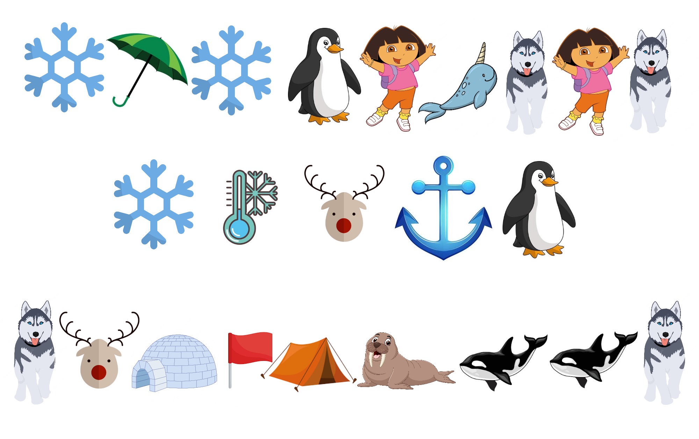

Captain's Log
Day 73
All sorts of strange creatures and objects keep floating past on different ice floes. I don't know where they started or where they're going, but spotting them makes the voyage less dull. I'm beginning to think we'll never make it to the pole.
